Arrays
Arrays are fundamental data structures that store elements in contiguous memory locations.
Data Structures and Algorithms
Arrays are fundamental data structures that store elements in contiguous memory locations.
Here's how these basic array operations can be implemented in Python. In Python, lists are used as dynamic arrays and provide built-in methods for these operations:
# Basic Array Operations in Python
# Initialize an array
array = []
# Generate random array
import random
def generate_random_array():
return [random.randint(1, 100) for _ in range(10)]
# Insert element at specific index
def insert_element(arr, value, index):
arr.insert(index, value)
return arr
# Delete element at specific index
def delete_element(arr, index):
if 0 <= index < len(arr):
return arr.pop(index)
return None
# Search for element
def search_element(arr, value):
try:
return arr.index(value)
except ValueError:
return -1
# Example usage:
array = generate_random_array()
print("Initial array:", array)
# Insert 42 at index 2
array = insert_element(array, 42, 2)
print("After insertion:", array)
# Delete element at index 3
deleted = delete_element(array, 3)
print("After deletion:", array)
# Search for element 42
position = search_element(array, 42)
print("42 found at index:", position)
Bubble Sort is a simple sorting algorithm that repeatedly steps through the list, compares adjacent elements and swaps them if they are in the wrong order.
def bubble_sort(arr):
n = len(arr)
for i in range(n - 1):
for j in range(0, n - i - 1):
if arr[j] > arr[j + 1]:
arr[j], arr[j + 1] = arr[j + 1], arr[j]
return arr
# Example usage:
arr = [64, 34, 25, 12, 22, 11, 90]
sorted_arr = bubble_sort(arr)
print("Sorted array:", sorted_arr)
Quick Sort is an efficient, in-place sorting algorithm that uses a divide-and-conquer strategy to sort elements.
def quick_sort(arr):
if len(arr) <= 1:
return arr
pivot = arr[len(arr) // 2]
left = [x for x in arr if x < pivot]
middle = [x for x in arr if x == pivot]
right = [x for x in arr if x > pivot]
return quick_sort(left) + middle + quick_sort(right)
# Example usage:
arr = [64, 34, 25, 12, 22, 11, 90]
sorted_arr = quick_sort(arr)
print("Sorted array:", sorted_arr)
Selection Sort is a simple sorting algorithm that divides the input into a sorted and unsorted region, and repeatedly selects the smallest element from the unsorted region to add to the sorted region.
def selection_sort(arr):
n = len(arr)
for i in range(n):
min_idx = i
for j in range(i + 1, n):
if arr[j] < arr[min_idx]:
min_idx = j
arr[i], arr[min_idx] = arr[min_idx], arr[i]
return arr
# Example usage:
arr = [64, 34, 25, 12, 22, 11, 90]
sorted_arr = selection_sort(arr)
print("Sorted array:", sorted_arr)
Graphs are collection of nodes (or vertices) connectedby edges. They are used to represent relationshipsbetween pairs of objects. Graphs can be directed or undirected, weighted or unweighted, and widely used in various such as social netweorks, transportation systems, and network topology.
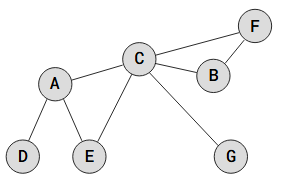Graphs can be represented in various ways, primarily through adjacency lists and adjacency matrices:
 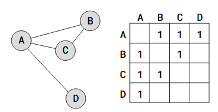
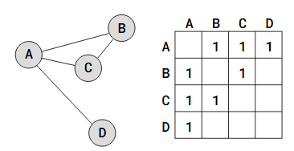
Graph traversal is the process of visiting each vertex in a graph.
Breadth-First Search (BFS) explores neighboring vertices before moving to the next level using a queue. It is effective for finding the shortest path in unweighted graphs as it explores all nodes at the current level before moving on. BFS is ideal for scenarios like finding the shortest route in a maze.
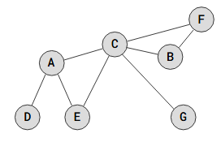Depth-First Search (DFS) explores as far as possible along each branch before backtracking using a stack. It is useful for detecting cycles and exploring connected components in a graph. DFS is effective for cycle detection and can help identify all vertices connected to a given vertex, making it beneficial for applications like finding clusters in social
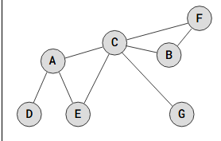The shortest path from vertex D to vertex F in the Graph above is D->E->C->F, with a total path weight of 2+4+4=10. Other paths from D to F are also possible, but they have a higher total weight, so they can not be considered to be the shortest path.
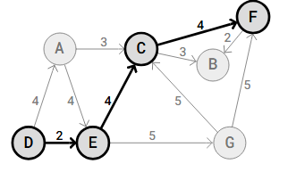A linked list consists of nodes with some sort of data, and a pointer, or link, to the next node.

is the simplest kind of linked lists. It takes up less space in memory because each node has only one address to the next node, like in the image below.
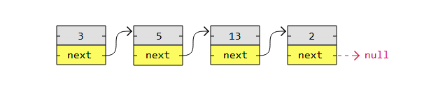doubly linked list has nodes with addresses to both the previous and the next node, like in the image below, and therefore takes up more memory. But doubly linked lists are good if you want to be able to move both up and down in the list.
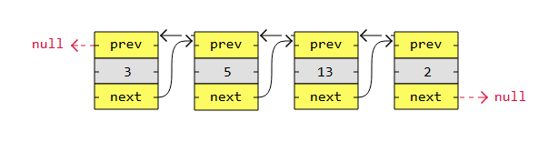is a type of linked list in which the first and the last nodes are also connected to each other to form a circle.
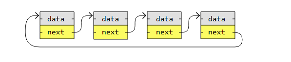is a non-linear data structure in which a collection of elements known as nodes are connected to each other via edges such that there exists exactly one path between any two nodes.
A Binary Tree is a type of tree data structure where each node can have a maximum of two child nodes, a left child node and a right child node.
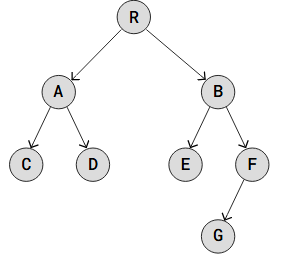A Binary Search Tree is a Binary Tree where every node's left child has a lower value, and every node's right child has a higher value.
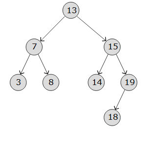AVL trees are self-balancing, which means that the tree height is kept to a minimum so that a very fast runtime is guaranteed for searching, inserting and deleting nodes
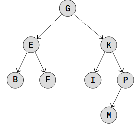AVL trees are self-balancing, which means that the tree height is kept to a minimum so that a very fast runtime is guaranteed for searching, inserting and deleting nodes
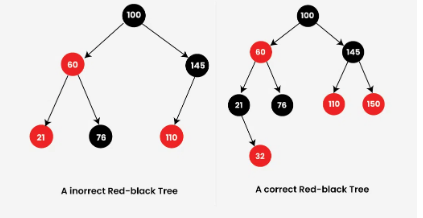Counting Sort is an integer sorting algorithm that counts the occurrences of each value in the input array and uses this information to place each value in its correct position.
def counting_sort(arr):
max_val = max(arr)
count = [0] * (max_val + 1)
for num in arr:
count[num] += 1
sorted_arr = []
for i, cnt in enumerate(count):
sorted_arr.extend([i] * cnt)
return sorted_arr
# Example usage:
arr = [64, 34, 25, 12, 22, 11, 90]
sorted_arr = counting_sort(arr)
print("Sorted array:", sorted_arr)